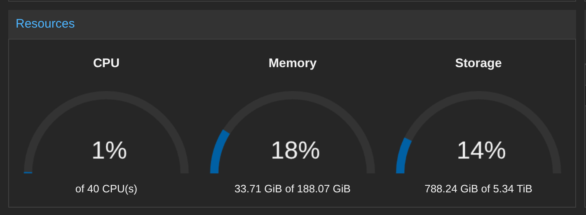

THE FOLLOWING PRESENTATION HAS BEEN "APPROVED" FOR
APPROPRIATE AUDIENCESBY THE TECHBASH SPEAKERS COMMITTEE
MAY CONTAIN:
LESS THAN IDEAL SOLUTIONS,
QUESTIONABLE SECURITY PRACTICES,
VIBES, A CODEX, QUIPS, FUNNY REMARKS, AI HALLUCINATIONS,
A HIGH PROBABILITY OF UNFINISHED CODE AND EXAMP
THE PRESENTATION SHOWN HAS BEEN RATED
DISCLAIMER - PART 1
All views, opinions and stances, expressed or implied, are mine and mine alone and do not represent the views, opinions or stances of any employer or company, past, present or future.
DISCLAIMER - PART 2
This presentation is for educational and home lab use only
This session focuses on time-saving home labbing strategies, not necessarily production grade security
It does not constitute professional security advice
Implementations and examples are lab only
CODE NOTICE
Sample code and configuration snippets in this session are provided under the MIT License, as-is, without warranty or guarantee of fitness for any purpose
Use responsibly and review before applying and/or executing
You assume all risk associated with their use
DISCLAIMER - PART 3
No AI Assistants or homelabs were harmed in the making of this presentation
All activities were performed by "trained professionals" on closed networks
Results may vary; your uptime and harmony at home are not guaranteed
Proceed at your own risk, you have been warned
AI Attribution
This work was primarily human-created. AI was used to make stylistic edits, such as changes to structure, wording, and clarity. AI was used to make content edits, such as changes to scope, information, and ideas. AI was used to make new content, such as text, images, analysis, and ideas. AI was prompted for its contributions, or AI assistance was enabled. AI-generated content was reviewed and approved. The following model(s) or application(s) were used: OpenAI's GPT-5 (ChatGPT), Claude Code [Sonnet 4], Gemini [Flash 2.5].
https://aiattribution.github.io/statements/AIA-Ph-SeCeNc-Hin-R-?model=OpenAI%27s%20GPT%252D5%20(ChatGPT)%2C%20Claude%20Code%20%5BSonnet%204%5D%2C%20Gemini%20%5BFlash%202.5%5D-v1.0
The Law of Two Feet
You deserve to get the most value out of your conference experience.
If this session isn't what you were expecting, or you think you'll get more value from a different session, please do not feel obligated to stay.
I'd rather you get the most out of your time at this conference.
Home Labbing on a Time Budget
Andrew Potozniak
About Me
- Family
- Coaching
- Hobbies
- Gaming (playing and designing, board games and video games), Sports, Hiking, Home Labbing,
Blackstone Cooking
- Gaming (playing and designing, board games and video games), Sports, Hiking, Home Labbing,
- Vibe-Coder 1.z3r0
- Blogger and Streamer
[ TODO: INSERT WELL TIMED JOKE SLIDE "creating a conference presentation on a time budget" ]
Home Labbing Creating a Presentation for TechBash on a Time Budget
Andrew Potozniak
Home Labbing on a Time Budget
Andrew Potozniak
Overview
- Key Takeaways
- What is Home Labbing
- Requirements
- Tips & Tricks
- Automation
- Core Services
- Recap & Closing
Key Takeaways
- Optimize Time: Apply practical shortcuts and workflows that keep your lab useful without turning it into a second job
-
Design Smart: Identify which services matter most and scope your lab to match your time budget
- DNS, PKI, IDAM vs Git Repository, Artifact Repository, etc
-
Evaluate Goals: Is it a nice to have, or am I doing this to learn or to achieve a concrete goal?
(Do I really need that full 3 tiered and HA design for [system] (i.e. gitea), or will an all-in-one approach with SQLite be enough?)
Key Takeaways
- Automate Early: Use automation to simplify setup, maintenance, and patching, so your lab doesn't eat into family or other free time
- Stay Independent: Build your lab on self-hosted tools instead of relying on cloud/external solutions (as best as you can)
- Be Flexible: You can always pivot and iterate as you learn
Key Takeaways
- Document Everything: You figured it all out at least once, so why waste time figuring it out again?
- Take Notes: Trust me, you'll rely on your notes more than you'll know
What is Home Labbing?
Home labbing is the wonderfully expensive hobby where you turn your extra hardware into a small-scale "data center"
(and occasionally, a space heater)
Usually built to learn and experiment with technology
(also to justify that "old" server in the basement)
Why do I home lab?
- To Learn
- To be able to Experiment in a Zero Risk environment
My Home Lab

My Home Lab

My Home Network

My requirements
- Not exposed to the Internet
- Zero 9s of availability
- Simpler is better
- Minimal reliance on cloud
- Feel the "pains" of an enterprise
- Something that I can drop and pick up months later
- Re-build from "scratch" relatively quickly
- Backup and Recovery
- "Control" Node in the Home Lab
- Maximize MTTC
What are your requirements?
Write down your requirements in a TODO list.
It will help you with scope creep, and help you avoid the shiny object
Quick Tips - Naming Convention
There are only two hard things in Computer Science: cache invalidation and naming things , and off-by-one errors.
- Phil Karlton
- Jeff Atwood / Leon Bambrick
You're exactly right, and AI Hallucinations.
- Andrew Potozniak
Quick Tips - Naming Convention
Something meaningful, concise that contains server numbering.
homelab-[vm purpose or system]-[0000]
- homelab-dns-0001
- homelab-ldap-0001
- homelab-testldap-0001
homelab-[os]-[version]-base
- homelab-ubuntu-24-base
- homelab-ubuntu-22-base
- homelab-slackware-15-base
Quick Tips - Numbering Convention
vmids
- 900s for templates
- 000s for core services
- 404 for servers that have gone missing
Quick Tips - Passwords
Come up with some memorable clever scheme for the passwords for accounts within your home lab, but different from everything else you use, and not the defaults, or 'password'
DISCLAIMER
This is NOT security advice (seriously, it's not)
Quick Tips - Directory Structure
Have a good memorable structure so you're not chasing down documents, playbooks or scripts.
home-lab-management/
├── ansible/
│ ├── guest-vm/
│ │ ├── gvm_generate_ssh_keys.yml
│ │ ├── gvm_patching_apt.yml
│ │ ├── gvm_patching_dnf.yml
│ │ ├── gvm_simple_ping.yml
│ │ ├── gvm_update_etc_hosts.yml
│ │ ├── gvm_update_network_netplan.yml
│ │ └── gvm_update_network_nmcli.yml
│ ├── host/
│ │ └── host_patching_apt.yml
│ ├── proxmox/
│ │ ├── pxmx_create_vms_from_template.yml
│ │ ├── pxmx_get_vms_state.yml
│ │ ├── pxmx_migrate_vms.yml
│ │ ├── pxmx_remove_vms.yml
│ │ ├── pxmx_restart_vms.yml
│ │ ├── pxmx_snapshot_vms.yml
│ │ ├── pxmx_start_vms.yml
│ │ ├── pxmx_stop_nodes.yml
│ │ ├── pxmx_stop_vms.yml
│ │ ├── pxmx_update_cpu_vms.yml
│ │ └── pxmx_update_memory_vms.yml
│ └── systems/
│ ├── control/
│ │ └── bootstrap_control_ubuntu.yml
│ ├── dns/
│ │ ├── assign_next_available_ip_technitium.yml
│ │ ├── bootstrap_technitium.yml
│ │ ├── create_a_record_technitium.yml
│ │ └── install_technitium_ubuntu.yml
│ ├── keycloak/
│ │ └── install_keycloak.yml
│ └── ldap/
│ ├── install_ldap_account_manager_ubuntu.yml
│ ├── install_openldap_ubuntu.yml
│ └── setup_ldap_directory.yml
└── terraform/
└── proxmox/
└── ubuntu/
├── multi-vm/
│ ├── 000_variables.tf
│ ├── 001_provider.tf
│ ├── 002_vm_build.tf
│ └── 003_output.tf
└── single-vm/
├── 000_variables.tf
├── 001_provider.tf
├── 002_vm_build.tf
└── 003_output.tf
Quick Tips - Command History
When you've forgotten to write things down, the command history is your best friend
fzf - command-line fuzzy finder https://github.com/junegunn/fzf
If you take away anything from this presentation, fzf is one of the best utilities that I use on a daily basis to save time
Automation
The three D's of Automation
Document, Document and Document!
WRITE IT DOWN!!!
Documentation is "automation" when time is limited and it's the blueprint for the automation you'll do later
(If it's 2am and you can rebuild it from your notes, you're doing it right)
(... and when you can't automate, you've left future-you a trail to follow)
What to do if you can't automate
Document the steps like a walkthru, or at least enough to pass the 2am test
A few examples of things that might not be automatable:
- proxmox install
- re-networking with SFPs
- my router configurations
My Flow for a New VM
- ./ansible/proxmox/pxmx_create_vms_from_template.yml
- ./ansible/proxmox/pxmx_start_vms.yml
- ./ansible/systems/dns/assign_next_available_ip_technitium.yml
- ./ansible/guest-vm/gvm_update_network_netplan.yml
- ./ansible/guest-vm/gvm_patching_apt.yml
- ./ansible/proxmox/pxmx_snapshot_vms.yml
New server ready to go in about 5:30 (with 2:30 spent on patching)
(Pre-work was performed to create the template)
ansible-core
- Agentless Automation
- Playbooks written in YAML
- $ ansible-playbook
ansible-core - os patching
$ ansible-playbook gvm_patching_apt.yml
---
- name: Patch Guest VM (apt)
hosts: all
gather_facts: false
become: true
tasks:
- name: Update APT Packages
ansible.builtin.apt:
name: "*"
update_cache: true
state: "latest"
notify:
- Reboot Host
handlers:
- name: Reboot Host
ansible.builtin.reboot:
msg: "OS Patching completed, rebooting"
reboot_timeout: 1800
ansible-core - install openldap
$ ansible-playbook install_openldap_ubuntu.yml
---
- name: Install OpenLDAP Server
hosts: all
gather_facts: false
become: true
#Removed vars section for presentation
tasks:
- name: Install packages
ansible.builtin.apt:
name: debconf-utils
state: present
- name: Install slapd and ldap-utils
ansible.builtin.shell: echo 'slapd/root_password password {{ slapd_admin_password }}' | debconf-set-selections && echo 'slapd/root_password_again password {{ slapd_admin_password }}' | debconf-set-selections && DEBIAN_FRONTEND=noninteractive apt-get install -y slapd ldap-utils
- name: Reconfigure slapd
ansible.builtin.shell: echo "slapd slapd/no_configuration boolean false" | debconf-set-selections && echo "slapd slapd/domain string {{ ldap_domain }}" | debconf-set-selections && echo "slapd slapd/password1 password {{ slapd_admin_password }}" | debconf-set-selections && echo "slapd slapd/password2 password {{ slapd_admin_password }}" | debconf-set-selections && echo "slapd slapd/purge_database boolean false" | debconf-set-selections && echo "slapd slapd/allow_ldap_v2 boolean false" | debconf-set-selections && echo "slapd slapd/move_old_database boolean true" | debconf-set-selections && dpkg-reconfigure -f noninteractive slapd
- name: Run slapcat
ansible.builtin.shell: slapcat
register: slapcat_output
- name: Validate ldap config
ansible.builtin.assert:
that:
- slapcat_output.stdout is search(ldap_domain.split('.')[0])
- slapcat_output.stdout is search(ldap_domain.split('.')[1])
fail_msg: "LDAP was not configured correctly: {{ slapcat_output.stdout | default ('NO_STDOUT_AVAILABLE') }}"
success_msg: "LDAP Configured Correctly!"
$ ansible-playbook setup_ldap_directory.yml
terraform-cli
- Infrastructure as Code
- Configuration written in HCL
- $ terraform
terraform-cli - single vm
$ terraform apply
resource "proxmox_vm_qemu" "tf-ubuntu-test" {
name = "${var.vm_guest_name}"
desc = "A VM created for terraform testing."
target_node = var.proxmox_target_node
tags = null
clone = var.clone_name
full_clone = true
disk {
type = "disk"
storage = "local-lvm"
slot = "scsi0"
size = "40G"
emulatessd = true
discard = true
iothread = true
format = "raw"
}
network {
id = 0
model = "virtio"
bridge = "vmbr0"
}
bios = "ovmf"
agent = 1
cores = 4
sockets = 1
memory = 8192
hotplug = "disk,network,usb"
scsihw = "virtio-scsi-single"
os_type = var.os_type
ipconfig0 = "ip=dhcp"
skip_ipv6 = true
}
$ terraform destroy
Core Services
Core Services - Virtual Machine Templates
You might spend a lot of time creating templates, but it's worth it, your vms will be consistent, and you'll be able to spin up new servers in minutes!
- user account
- ssh keys
- sudoers
- motd
- rootCA trust
- patching
- sysprep/sealing (SSH Host Keys, logs, machine UUID, etc)
"Re-templating" can be quick, albeit manual
(packer is on my list of things to get working, if you have this working, I'd love to talk with you afterwards!)
Core Services - The Control Node
- The Automator
- The Certificate Authority
- Testing
Core Services - Domain Name System
Host files work... until they don't, they're error-prone and nearly impossible to keep consistent across the fleet
Routers with DHCP are great, but each new VM means more manual intervention, and sometimes the Roku steals your IP
(Or the other way, which reduces MTTC to zero!)
Core Services - Domain Name System
Carve out a sizable statically assignable block of IPs for your homelab (and leave the rest to your router's DHCP)
Assign those static IP addresses with Technitium DNS and point your homelab servers' DNS search domain to your homelab zone, primary DNS to Technitium, and fallback to your router
Keep it simple, reliable, and collision-free, and Technitium's API is automatable!
Identity and Access Management (IDAM)
Centralizing authentication has its pros and cons, but for something quick OpenLDAP just works
You can automate users and groups in LDAP quickly and easily with ansible-core
When you're ready to test federated protocols like SAML or OIDC, Keycloak makes a great “next step”
(And if it breaks, it's probably just the redirect URI, or SSL certificates, again)
Core Services - Public Key Infrastructure
mkcert
[RootCA] -> [Leaf]
$ mkcert [hostname|fqdn|ip] [hostname|fqdn|ip] ...
$ mkcert dns-entry-1 dns-entry-2 127.0.0.1 192.168.1.1
Created a new local CA 💥
Note: the local CA is not installed in the system trust store.
Run "mkcert -install" for certificates to be trusted automatically ⚠
Created a new certificate valid for the following names 📜
- "dns-entry-1"
- "dns-entry-2"
- "127.0.0.1"
- "192.168.1.1"
The certificate is at "./dns-entry-1+3.pem" and the key at "./dns-entry-1+3-key.pem" ✅
It will expire on 31 January 2028 🗓
$ ls
dns-entry-1+3-key.pem dns-entry-1+3.pem rootCA-key.pem rootCA.pem
Final Thoughts
Three Tier vs All in One
A Case Study using Gitea

- All-in-one: quicker setup, easier rollback, perfect increment and could migrate to three-tier later
- Three-Tier: Great for systems level practice
(It all comes back to requirements and goals)
Recap & Closing
Optimize Time, Design Smart, Evaluate Goals, Automate Early, Stay Independent, Be Flexible, Document Everything, Take Notes
Recap & Closing
- Slides (Reveal.js)
- https://github.com/tyraziel/home-labbing-on-a-time-budget/
- Home Lab Management
- https://github.com/tyraziel/home-lab-management/
- THOUGHTS.md
- https://tyraziel.substack.com/